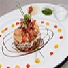
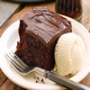

 Entrée froide à base de fruit de mer. Une entrée facile, rapide â cuisiner et chic! Profitons encore des tomates de saison, pour les garnir de crevettes, gambas, voire mème de langouste.
 Plat fait avec des légumes et de poulet. Recette par Oummsajida,Cuisses de poulet et pomme de terre au four ... un plat simple et délicieux pour toute la famille
Plat fait avec des légumes et de poulet. Recette par Oummsajida,Cuisses de poulet et pomme de terre au four ... un plat simple et délicieux pour toute la famille
 Plat secondaire: Pomme Frite. Fines lamelles de pommes de terre cuites en un ou deux bains.
Plat secondaire: Pomme Frite. Fines lamelles de pommes de terre cuites en un ou deux bains.
 Dessert Gàteau au chocolat.